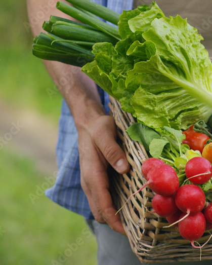
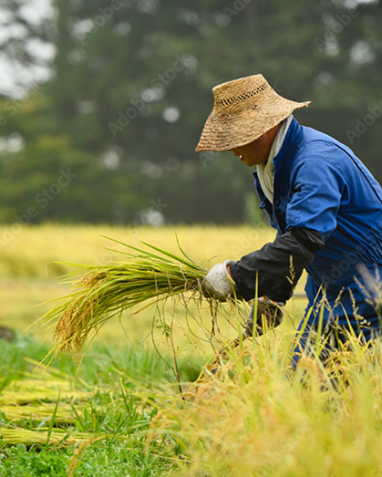
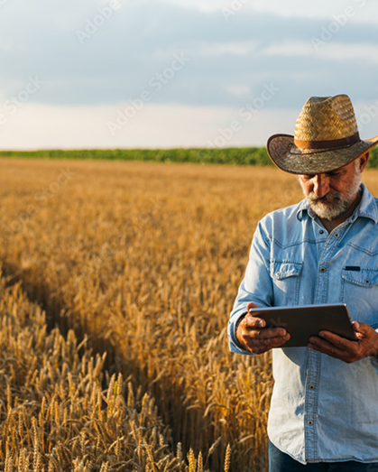
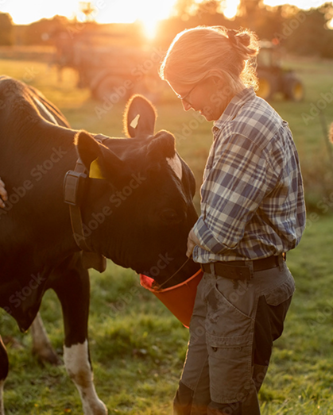
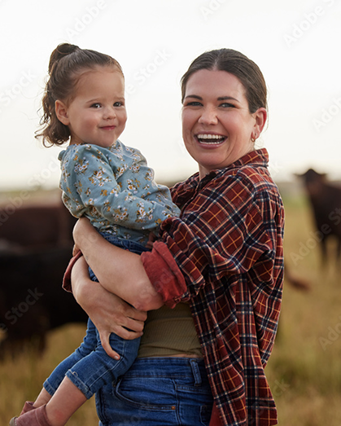

Programa Nacional de Fortalecimento da Agricultura Familiar (Pronaf): Oferece crédito e apoio financeiro para atividades agropecuárias exploradas por agricultores familiares.

Programa de Aquisição de Alimentos : Facilita a compra de alimentos produzidos pela agricultura familiar, garantindo renda para os produtores e acesso a alimentos saudáveis para a população.

Programa de Fomento às Atividades (PFR): Combina acompanhamento social e produtivo com transferência de recursos financeiros para famílias rurais desenvolverem seus projetos produtivos.

Programa Terra da Gente: Busca ampliar o acesso à terra, lote e espaços do campo para promover a inclusão produtiva de famílias rurais.

Programa Nacional de Sucessão Rural para Jovens Agricultores (PNSR-JA): Busca incentivar a permanência de jovens no campo, oferecendo linhas de crédito e formação técnica.
